MicroscopeOS Cómo usar el microscopio desde la computadora
Para cualquier persona, sin conocimientos previos. Explica cómo encender la luz,
ver la muestra, enfocarla y tomar fotos, una o muchas.
1Enciende la luzpág. 42Mira la muestrapág. 43Enfoca (con botones, con el teclado o automático)pág. 54Toma una foto o un timelapsepág. 8Si algo sale malpág. 9Tarjeta para tener junto al microscopiopág. 10
Antes de empezar
Qué necesitas
El microscopio encendido y con la muestra ya colocada.
Una computadora, tableta o celular conectado a la misma red que el microscopio.
La dirección de la página del microscopio. Pídesela a la persona responsable y anótala aquí:
http:// :8000/ui
Cómo abrir la página
Abre el navegador (Chrome, Firefox, Edge o Safari).
Escribe la dirección completa en la barra de arriba y presiona Enter.
Arriba a la derecha debe decir ● Listo. Si dice «Timelapse en curso», alguien
está usando el microscopio: no lo interrumpas.
Palabras que vas a ver
Palabra
Qué significa
µm (micra)
Una milésima de milímetro. 1000 µm = 1 mm. El foco se mueve en micras porque una célula
mide de 10 a 30 µm.
Enfocar
Subir o bajar la plataforma hasta que la imagen se vea nítida.
Altura
Cuánto subiste o bajaste desde que se encendió el microscopio. Sirve para saber dónde
estás, no es una medida absoluta.
Relieve (DPC)
Un tipo de luz que ilumina de lado y hace visibles las células transparentes
(sin teñir).
Timelapse
Fotos automáticas cada cierto tiempo, durante horas o días, sin que tengas que estar ahí.
Cámara 0 / Cámara 1
El microscopio tiene dos cámaras, cada una con su propio motor de foco.
Lo que hagas en una no mueve la otra.
La pantalla de un vistazo
La página está ordenada en el mismo orden en que se usa. Los círculos verdes con números son los pasos;
sigue el 1, luego el 2, el 3 y el 4.
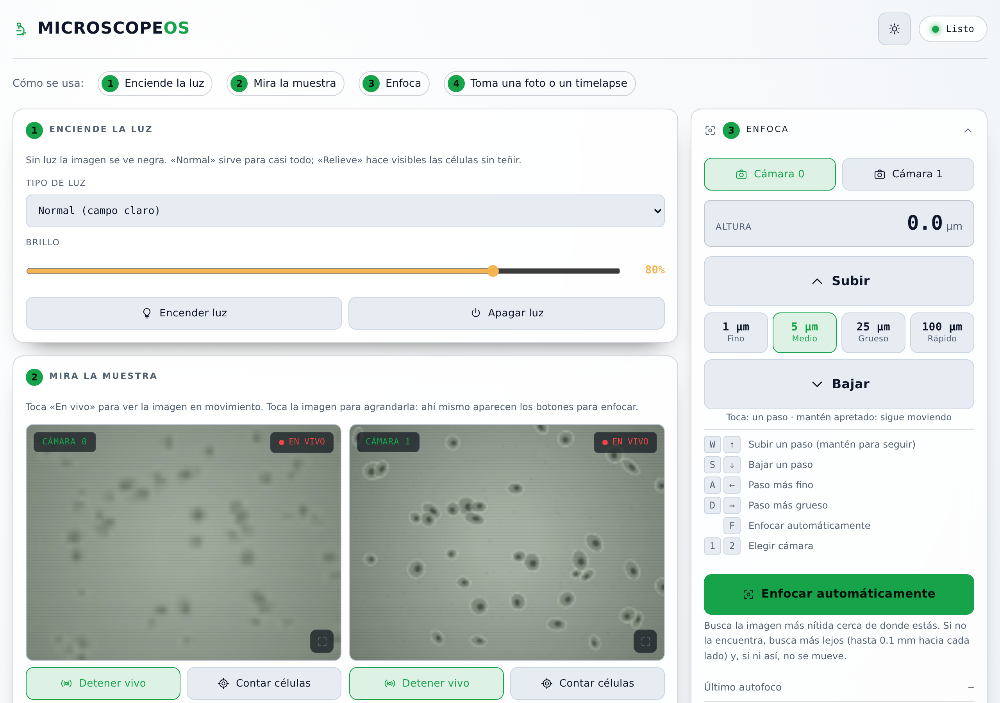
A123B
AGuía «Cómo se usa». Toca un paso para ir directo a esa parte.1Enciende la luz. Elige el tipo de luz y el brillo.2Mira la muestra. Las imágenes de las dos cámaras.3Enfoca. Botones para subir y bajar, y el enfoque automático.BEstado. «Listo» = puedes usarlo. «Timelapse en curso» = está tomando fotos solo.
Más abajo están el paso 4 (tomar una foto y el timelapse), las fotos guardadas, la
temperatura y el CO2. Al final, bajo «Más opciones», hay ajustes que casi nunca hace falta tocar.
No puedes romper nada desde la página.
Si un botón no está disponible, aparece apagado o te sale un mensaje que explica por qué.
1Enciende la luz
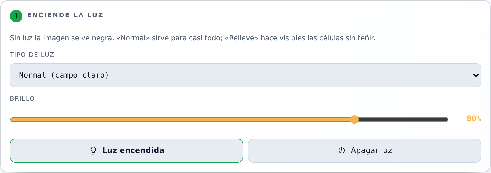
En Tipo de luz deja Normal para empezar.
Toca Encender luz. El botón se pone amarillo y dice «Luz encendida».
Si la imagen se ve muy oscura o muy clara, mueve Brillo.
¿Células transparentes?Las células sin teñir casi no se ven con luz normal.
Cambia a Relieve: se ven como en 3D. Con la luz encendida, el cambio es inmediato.
2Mira la muestra
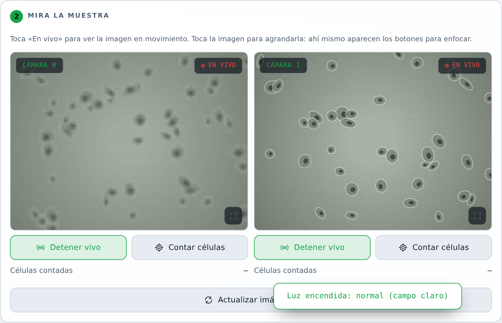
Toca En vivo debajo de la cámara que quieres ver. Arriba de la imagen aparece
● EN VIVO.
Toca la imagen para verla en grande. Al lado aparecen los botones para enfocar, así no tienes que
salir de la imagen grande.
Para salir de la imagen grande toca la ✕ de arriba a la derecha, toca fuera de la imagen o
presiona Esc.
«Contar células» cuenta las células que se ven y pone el número debajo de la imagen.
3Enfoca
Enfocar es subir o bajar la plataforma hasta que las células se vean con bordes nítidos. Hay tres maneras:
automática (la más fácil), con los botones o con el teclado.
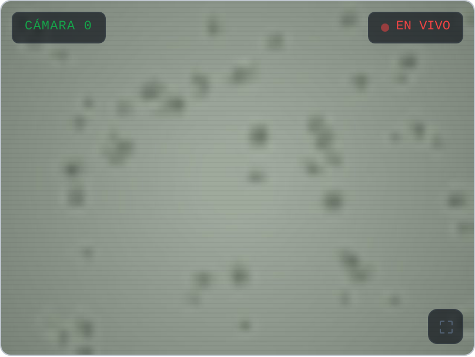
Muy lejosmanchas sin forma
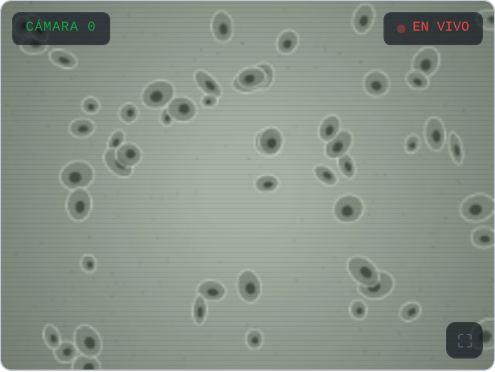
Cercase ven, pero borrosas
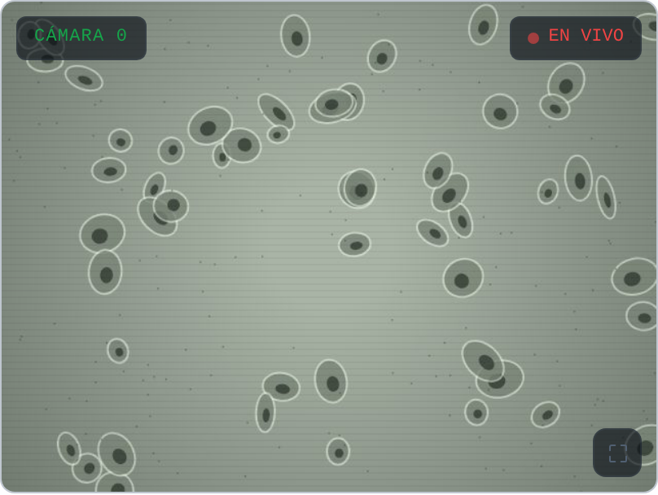
Enfocadobordes y núcleos nítidos
Así cambia la imagen mientras te acercas al foco.
Manera 1 · Automática (recomendada)
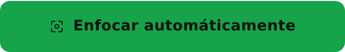
Elige la cámara arriba: Cámara 0 o Cámara 1.
Toca Enfocar automáticamente (o la tecla F) y espera de 10 segundos a 1 minuto.
Al terminar aparece un mensaje, por ejemplo «Enfocado: subió 6.8 µm».
Si dice «No encontré el foco»Buscó hasta 0.1 mm hacia arriba y hacia abajo y no encontró
una imagen nítida, así que se quedó donde estaba. Acércate a mano con pasos de 25 µm hasta que veas
algo con forma, y vuelve a intentarlo. También revisa que la luz esté encendida y que haya células en la imagen.
3Enfoca con los botones
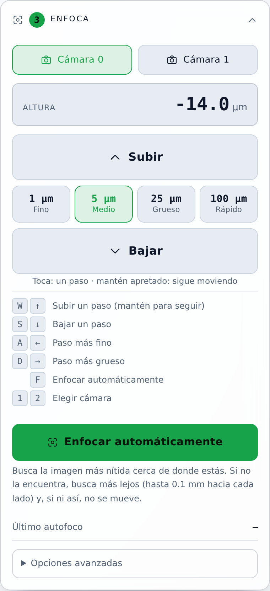
Elige la cámara.
Elige el tamaño del paso (los cuatro botones entre Subir y Bajar).
Toca Subir o Bajar mirando la imagen.
Altura te dice dónde estás: al subir el número crece, al bajar disminuye.
¿Qué tamaño de paso uso?
Paso
Cuándo usarlo
Cuánto es
100 µm · Rápido
Para alejarte o acercarte mucho, por ejemplo al cambiar de muestra.
0.1 mm por toque. Con cuidado.
25 µm · Grueso
Cuando no se ve nada con forma.
Más o menos el tamaño de una célula.
5 µm · Medio
Cuando ya se ven las células, pero borrosas.
Un cuarto de célula.
1 µm · Fino
Para el último ajuste, hasta que los bordes se vean nítidos.
El movimiento más fino.
Receta para enfocar a mano
Empieza con 25 µm hasta que aparezcan formas → cambia a 5 µm hasta que se vean las células →
termina con 1 µm. Si te pasas (la imagen empeora), ve un paso en la dirección contraria.
3Enfoca con el teclado o desde la imagen grande
En una computadora puedes enfocar sin usar el ratón. Las teclas funcionan mientras no estés escribiendo en
un campo de texto.
W o ↑
Subir un paso (mantén para seguir)
S o ↓
Bajar un paso
A o ←
Paso más fino
D o →
Paso más grueso
F
Enfocar automáticamente
12
Elegir cámara 0 o 1
Esc
Cerrar la imagen grande
La misma lista aparece en la página, debajo de los botones, y cada tecla se ilumina al presionarla.
Desde la imagen grande
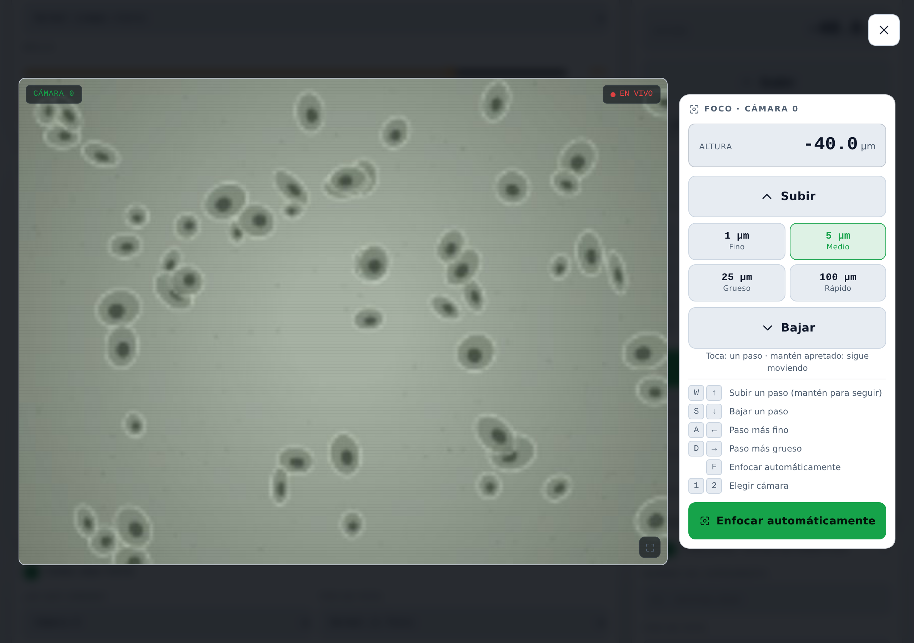
Al tocar una imagen se ve en grande y aparecen al lado los controles de foco de esa misma cámara.
En un celular aparecen debajo de la imagen.
4Toma una foto o un timelapse
Una foto
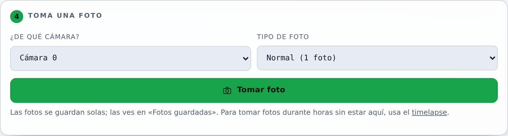
Elige de qué cámara (o «Las dos») y el tipo de foto. «Normal» sirve casi siempre.
Toca Tomar foto.
Las fotos aparecen en «Fotos guardadas», más abajo en la página. Desde ahí se descargan.
Antes de un timelapse
Enciende la luz y enfoca bien las dos cámaras.
Revisa que la temperatura y el CO2 estén en su valor.
No muevas la muestra ni el microscopio mientras corre.
Un timelapse
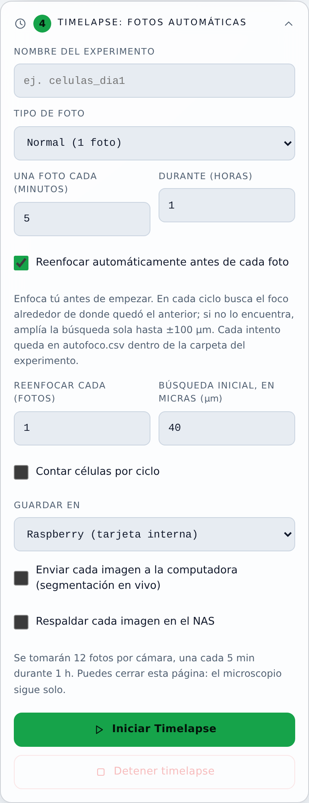
Escribe un nombre (por ejemplo, «celulas_dia1»), cada cuántos minutos tomar foto y durante
cuántas horas. Abajo te dice cuántas fotos va a tomar.
Deja marcado «Reenfocar automáticamente antes de cada foto»: antes de cada foto vuelve a buscar el foco,
porque con las horas el foco se corre un poco.
Toca Iniciar timelapse. Arriba a la derecha cambia a «Timelapse en curso».
Puedes cerrar la página: el microscopio sigue solo.
Para terminar antes, toca Detener timelapse.
Si algo sale mal
Lo que ves
Qué hacer
La imagen está negra.
Enciende la luz (paso 1). Si ya está encendida, sube el brillo.
La imagen está gris y sin nada.
Estás muy lejos del foco o no hay células en esa parte. Prueba
«Enfocar automáticamente»; si no lo encuentra, muévete con pasos de 25 µm.
«No encontré el foco»
Se quedó donde estaba. Acércate a mano hasta que veas formas y vuelve a
intentarlo (pág. 5).
«Autofoco en curso, espera a que termine»
El microscopio se está enfocando solo. Espera el mensaje
de que terminó; mientras tanto los botones de mover no responden.
Los botones están apagados y arriba dice «Timelapse en curso».
Alguien está tomando fotos
automáticas. No se puede mover nada hasta que termine o lo detenga quien lo inició.
Franja roja: «Sin conexión con el servidor»
La computadora perdió la conexión con el microscopio.
Revisa que estés en la misma red y recarga la página. Si sigue igual, avisa a la persona responsable.
Aviso «motor caliente», «CORTO» o «CORTE TÉRMICO»
Deja de mover el foco y avisa a la persona
responsable.
Un cambio parece no hacer nada.
Mira el mensaje que aparece abajo, en el centro de la pantalla:
siempre dice qué pasó.
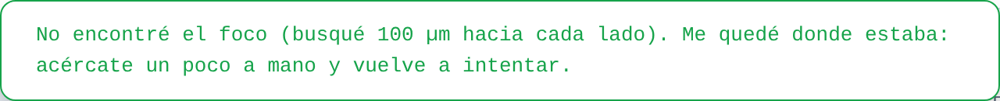
Así se ven los mensajes. Aparecen unos segundos abajo, en el centro.
Lo que conviene no hacer
Mover la muestra o golpear la mesa durante un timelapse.
Dar muchos toques seguidos con el paso de 100 µm sin mirar la imagen: la plataforma se mueve 0.1 mm en cada toque.
Cambiar los ajustes de «Más opciones» si no sabes para qué son: casi nunca hace falta.
MicroscopeOS · Guía rápida recorta y pega junto al microscopio ✂
1 Enciende la luz Tipo «Normal» → Encender luz.
Células transparentes: «Relieve».
2 Mira la muestra En vivo. Toca la imagen para
verla en grande.
3 Enfoca Enfocar automáticamente o a mano:
25 → 5 → 1 µm.
4 Foto o timelapse Tomar foto. Timelapse:
minutos, horas, Iniciar.
W↑
Subir
S↓
Bajar
A←
Paso más fino
D→
Paso más grueso
F
Enfocar automáticamente
12
Cámara 0 / 1
Dirección: http:// :8000/ui
Tocar Subir/Bajar = un paso · mantener = sigue hasta soltar.
1000 µm = 1 mm. Una célula mide 10–30 µm.
Arriba a la derecha: Listo = libre · Timelapse en curso = no tocar.